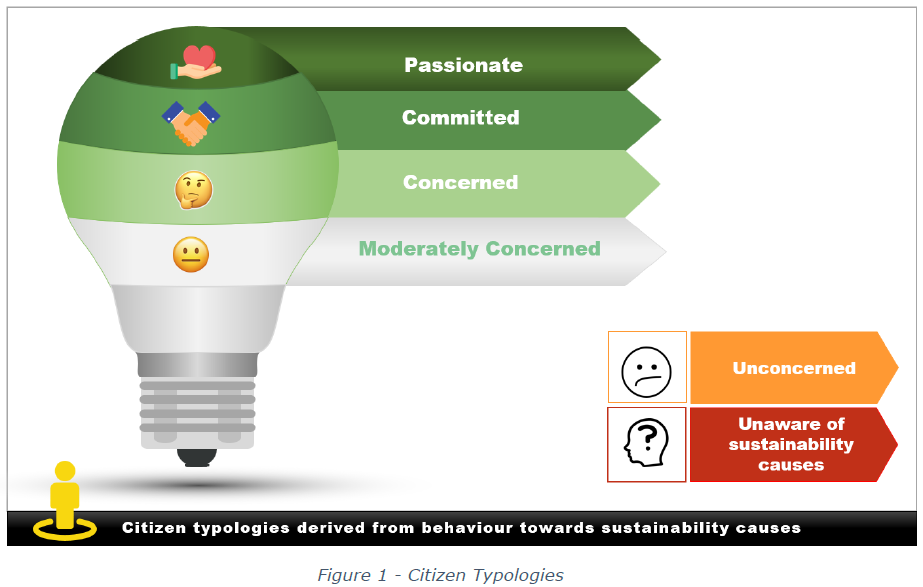
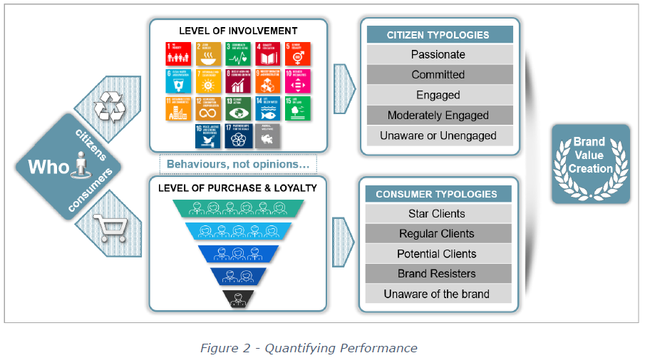
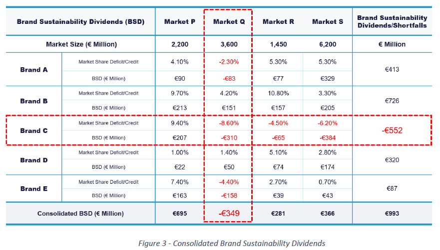
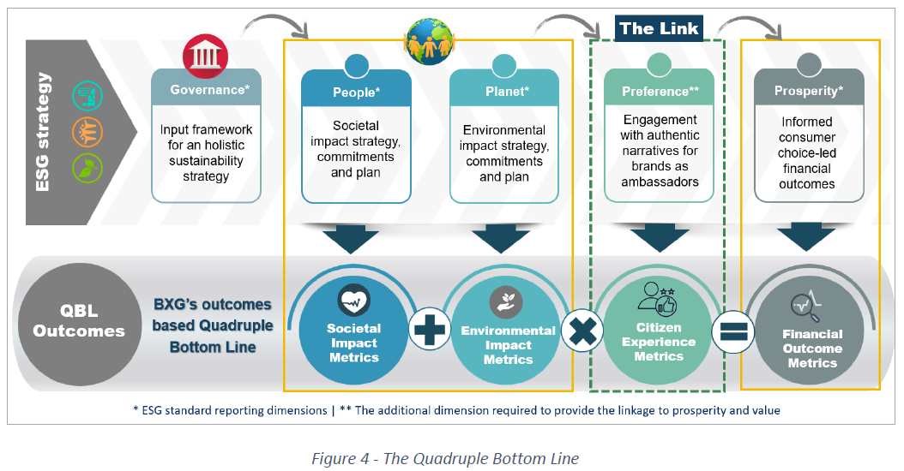
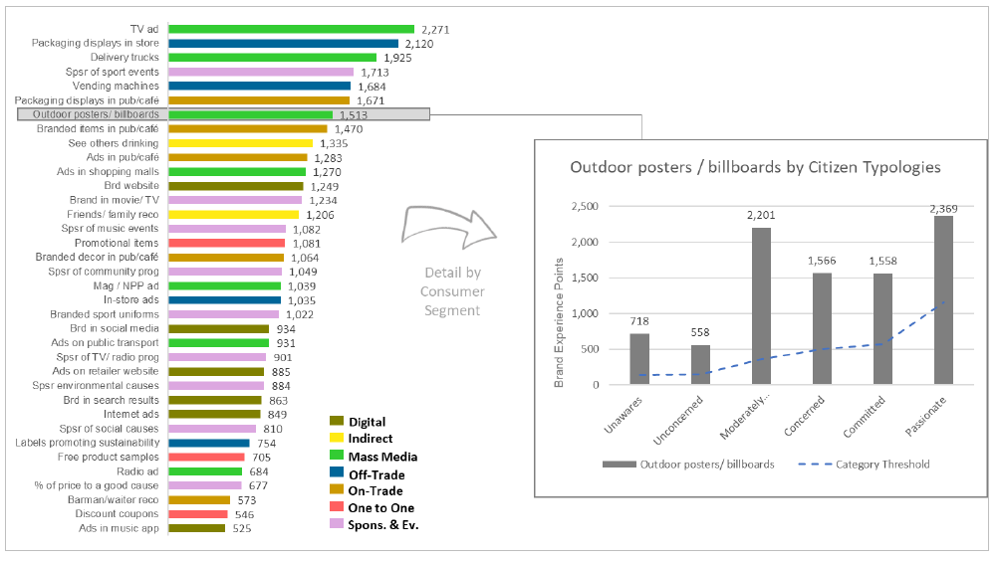
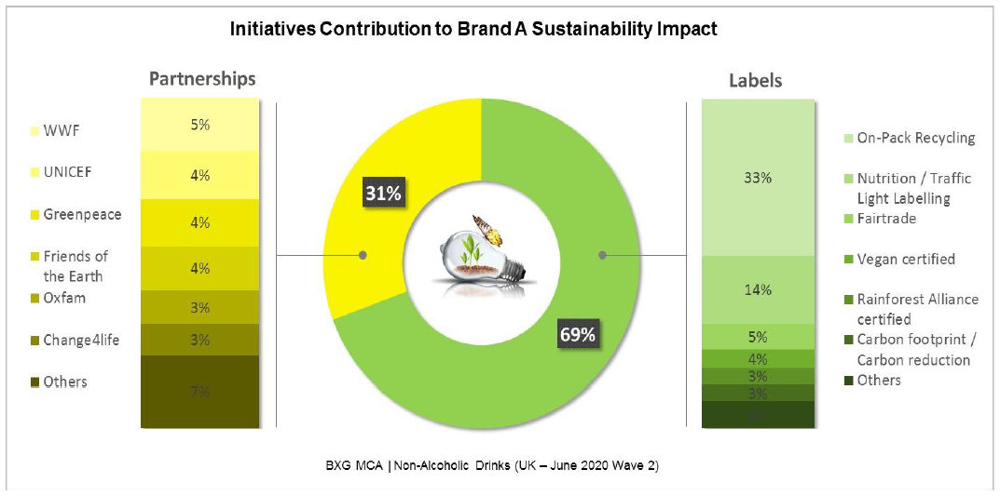
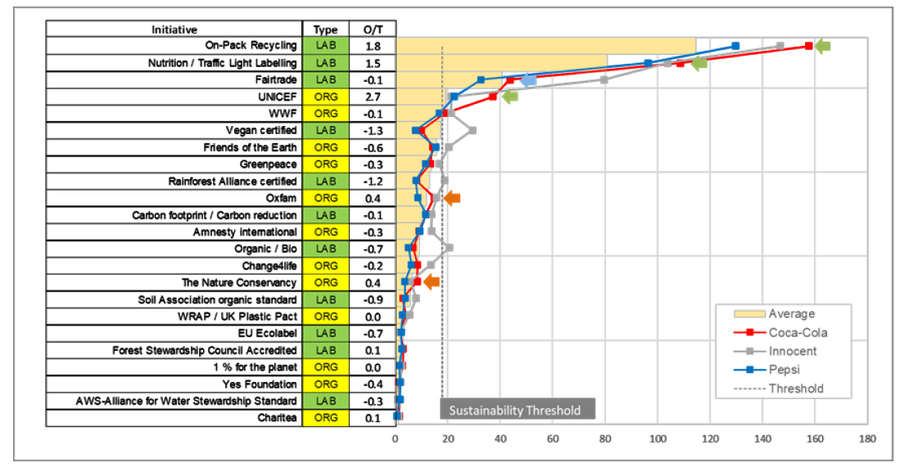

In September 2020 the World Economic Forum, in conjunction with the International Business Council and all ‘big 4’ accounting firms, published a white paper titled “Measuring Stakeholder Capitalism: Towards Common Metrics and Consistent Reporting of Sustainable Value Creation”. The paper outlines a strategy towards developing and implementing a global set of standards for ESG reporting. It includes metrics for Governance, People, Planet and Prosperity, emphasizing the ‘belief that the interrelation of economic, environmental and social factors is increasingly material to long‑term enterprise value creation’. We applaud this initiative strongly. However, it does not address the critical link between enlightened business practices with respect to People and Planet and their impact on individuals’ preferences and the buying decisions that deliver Prosperity.
This is a problem because, only through such informed consumer choice, can we channel the resources of the global economy into more sustainable models of production and consumption and can businesses create value sustainably. ‘You manage what you measure’. Only by establishing line of sight metrics from engagement with brands as authentic ambassadors for responsible business to quantified financial outcomes will business leaders be able to embed such principles at the heart of their operating models.
OVERVIEW
As The Brand Experience Group provides a unique research and advanced analytics platform called the MCA
® that establishes line-of-sight from engagement with brands to preference and choice through a common Brand Experience currency. It is a robust predictor of business performance that has been established for over twenty years.
The “MCA for Sustainability” is built on these proven foundations. It allows businesses to understand how effectively their brands are delivering the sustainability narrative to citizens and consumers, how this is impacting preference and choice, and how this translates into brand “Sustainability Dividends” and Deficits (or opportunities) that add to or subtract from the value of the enterprise.
The Authentic narratives for brands as ambassadors for sustainable business models need to be activated in a way that is relevant to a category, market and even occasion. The “MCA for Sustainability” also provides a toolkit that is designed to help brand owners improve performance by revealing which sustainability issues are most important to consumers in a particular category, and where brands should focus their efforts.
WHY IS THIS IMPORTANT?
By revealing and quantifying the direct impact of sustainable business practices on value creation, businesses leaders are able to enhance and act on their commitment to deliver positive environmental and societal impacts because they can demonstrate how this delivers better financial returns.
It allows business leaders to make a direct connection between establishing operating models that are well governed and more sustainable environmentally and socially and the incremental enterprise value that creates, providing the business case for responsible business.
It allows investors to quantify and realise the opportunities associated with improving business behaviours and better articulating the positive environmental and societal contributions being made, encouraging capital flows towards businesses that are investing for our collective future.
HOW DOES IT WORK?
The process starts by segmenting individuals based on their behaviours as both citizens and consumers, reflecting their engagement with the specific issues and causes relevant to a particular product category:
Citizen typologies: How they relate to all aspects of sustainability, e.g. which causes do they relate to, how many, how involved are they and how this impacts their behaviour with respect to particular categories and brands. This is built on the UN Sustainable Development Goals (SDGs) framework so is universally applicable. (Figure 1).

Consumer typologies: Which brands different socio-demographic segments are choosing, how they are experiencing these brands through which touchpoints and activities, and how much they are associating these brands with their sustainable attributes and behaviours.
We also classify the brands in a category according to the causes they associate with and support, and the accreditation labels they use on their materials. This allows a granular analysis of what causes and accreditations have most impact with different citizen typologies.
We analyse the intersection of people as Citizens and Consumers to understand which brands in a category are achieving better performance among Citizens who are strongly engaged and motivated by a brand’s sustainability characteristics.
WHAT ARE THE PERFORMANCE METRICS?
The robust correlation of Brand Experience Share with Market Share movement allows us to quantify the “Sustainability Dividend” or shortfall for a brand based on consumer perceptions of brand purpose and sustainability impact, and how that translates into preference and choice.
Brand Sustainability Dividends (BSDs)
We are able to quantify how much more (or less) a brand is achieving in terms of sales because of its societal and environmental impact and how that is communicated. This is the Brand Sustainability Dividend (BSD) or shortfall:
- This is done by looking at brand performance through the lens of Citizen typologies.
- If a brand is achieving stronger performance amongst citizens who care about sustainability, it is achieving a Sustainability Dividend.
- If a brand is under-performing among citizens who care about sustainability versus the broader population, it has a shortfall i.e. it is leaving value on the table. This is equally important to quantify, because it defines the ‘size of the prize’ that can be realized by improving the business model behind the brand or just better communicating the social and environmental impact the brand is making.

At the Enterprise Level: Consolidated Brand Sustainability Dividends
By aggregating Sustainability Dividends across brands and markets, a business can track the incremental revenue and share achieved by its brands as ambassadors for sustainable business behaviours and identify opportunities to improve for each brand and market. In the example below (Figure 3) we are able to show how each brand in a portfolio is performing and the size of the performance improvement prize that the business can realize through better practices, better communication or both.

In Figure 3 above, the Consolidated BSD is a positive picture, with €993 million additional sales value being created by gaining additional market share among Sustainability segments. However, the analysis also reveals two major opportunities to improve:
- Brand C where there is a shortfall across markets of €552 million
- Market Q where multiple brands are leaving value on the table, amounting to a shortfall of €349 million (including Brand C)
CONNECTING TO FINANCIAL METRICS
Capital flows are increasingly favouring businesses that exhibit good practice in terms of governance, societal impact and environmental contribution. This is contributing to accelerating valuations for the most sustainably run businesses. For example, the 5-year performance of the Dow Jones Sustainability Group Index outperformed the Dow Jones Global Index by 36% over the same period.
Sustainability Dividend revenue opportunities, associated net margins and sector valuation multiples combine to provide a powerful leading indicator for the incremental enterprise value available to investors and business leaders who put the principles of sustainability at the heart of their business operating models and brands.
Introducing the Quadruple Bottom Line
The Brand Experience Group’s outcomes-based reporting model is fully consistent with the WEF/IBC framework with the addition of one important dimension, the metrics that describe citizen and consumer engagement with brands as ambassadors for sustainable business operating models.
The Brand Experience Group ‘Quadruple Bottom Line’ model, made possible by the “MCA for Sustainability”, combines individual preference and choice with other business outcomes across:
- People: The contribution to society as reflected in metrics such as those related to diversity & inclusion, pay equality, wage levels, child/forced labour, health and Safety, broader health outcomes, training for the future and worker rights
- Planet: The contribution to our environment as reflected in metrics such as those related to the Paris-aligned greenhouse gas emission targets, air pollution, elimination of single-use plastics, TCFD implementation, and use and ecological sensitivity and fresh water conservation.
- Preference – our unique contribution: The impact of communicating all of this well on preference and choice across different citizen typologies as reflected in metrics such as category touchpoint influence, touchpoint multiplier effects, brand associations, Brand Experience, Brand Experience Share and sales conversion.
- Prosperity: The resulting economic health that is generated as a result for businesses, communities and individuals which makes possible virtuous circles of sustainable investment and economic development.

When the metrics used to track financial, environmental and social performance are combined with the metrics that describe consumer engagement with brands as demonstrated by their behaviours, then businesses can establish a truly actionable line-of-sight between sustainable business practices and value creation through brand preference and purchase. Only then can we establish virtuous circles of brand purpose, individual engagement and business model transformation towards a more sustainable future.
INTRODUCING THE MCA FOR SUSTAINABILITY DIAGNOSTICS
The ‘MCA for Sustainability’ is built on a detailed understanding of citizen and consumer behaviours, providing a comprehensive diagnostic toolkit to enable marketing and sustainability teams to work together to develop and deliver sustainable performance improvement strategies. The diagnostics reveal which activities are most engaging, which sustainability initiatives are most relevant, and how brand experience and sustainability narratives can be strengthened to realize performance improvement opportunities.
The illustrations below show examples taken from a recent UK study into the Non-Alcoholic Drinks sector, highlighting metrics such as Touchpoint Contribution and Sustainability Impact by citizen typology, benchmarked versus competing brands.
- Touchpoint Contribution: Which activities are generating the most brand experience, and which connect most effectively among the sustainability citizen typologies?

In this example the brand can establish a number of very useful facts:
- What are the largest/smallest contributors of brand experience, measured by the unifying currency of Brand Experience Points (BEPs)?
- This supports good decision making by ensuring the largest contributors are fully supported, and highlighting the budgets and resources on the smallest contributors as potential opportunities to improve performance.
- How does the contribution of BEPs for each activity vary across citizen and consumer typologies?
- This clarifies which activities are most relevant to a specific audience and marketing task.
- Sustainability Impact: How is my brand performing in delivering its sustainability narrative to consumers? Which sustainability initiatives are driving this most effectively?

- Benchmarking: How is my brand benchmarking on perceived sustainability impact vs. key competitors? Where do we need to improve performance to win?

IN CONCLUSION
There are three major take
aways from this:
First, this is ground breaking. The lack of a way of quantifying the sustainability
dividend or shortfall (i.e. opportunity) for a brand has presented the single biggest
impediment to businesses fully embracing more sustainable operating models. The
Brand Exper ience Group has now solved this problem.
Second, the scale of the opportunit y f or leading brands is much larger than business
leaders typically realise , providing strong economic incentives to invest in better ways
of doing business and more effective ways of engaging consumers with authentic
narratives for brands that stand for the right things.
Third, the implications are profound. If businesses are to lead the transformation to a
more sustainable economy, as only they can, they have to take citizens and
consumers with them on the journey. Only by harnessing the power of informed
consumer choice globally c an we deliver change at the scale and pace needed?
Ultimately it will be the ideas, values and consumer connections with authentic brands
as ambassadors for sustainable business behaviours that will shape our collective
future.